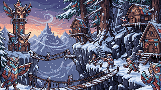
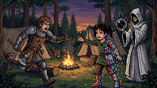
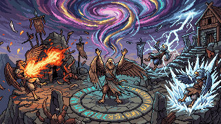
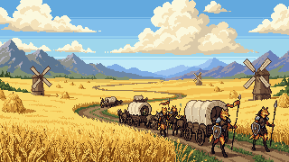
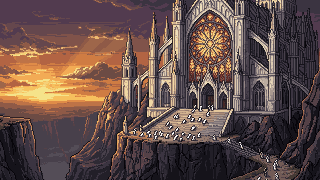
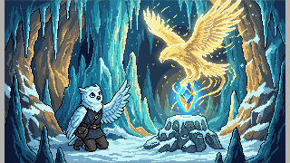
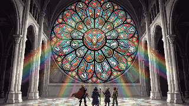
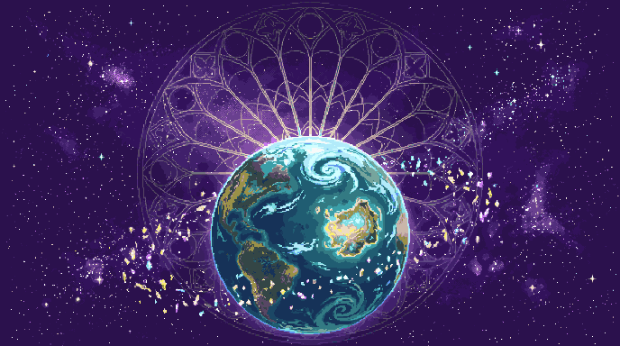
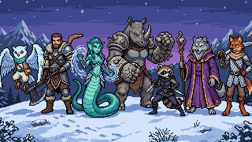

Android · Action survival
The Consecrated have turned Lumeria into stained glass. Aeli, the young owl who carries the glimmer, faces their hordes to free everyone trapped in the glass.
One day, people, creatures and places across Lumeria became stained glass: mosaics of colored glass, frozen in the instant they were struck. No one died. They are trapped inside, fully aware.
It was done by the Consecrated, zealots led by the Primate Varek. They call it the Blessing, and truly believe they are saving the world from suffering.
Aeli is the new Glimmer Born, the one in whom the glimmer is reborn. Alongside Tarn and the friends he frees along the way, he learns to break the glass and bring the color back.

The glimmer keeps memories of the fights against the Consecrated. In A Tormenta you relive these echoes: pick a hero, step into a map of Lumeria and hold out against wave after wave of soldiers.
Soldiers never die, they are Defeated. The heroes fight to free, not to kill.

The Glimmer Born. Curious and light, he fights with nothing but his own wind.
A stubborn warrior with an axe and a boomerang. He wants to free his sister, Nina.
The gentle healer of the lake, with a quiet anger toward the Consecrated.
Big, quiet and serious, with stone gauntlets. Laughs loud when she laughs.
The eldest mentor. Tells stories that never end, always over tea.
Explosive and scarred by his own fire. No one knows yet whose side he is on.
Lost her flight in the Storm. Now she hunts Aeli riding the falcon Fagulha.
Leader of the Consecrated. Calls the glass that traps the peoples a Blessing.






Support: studioslumeria@gmail.com
The game is currently available in Portuguese only.